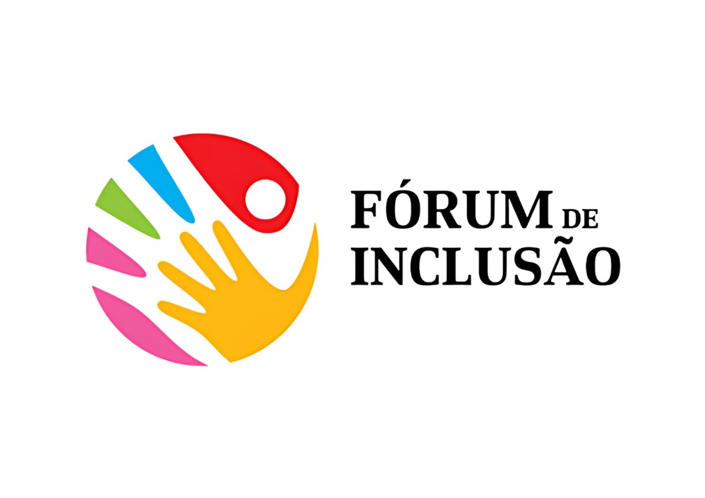
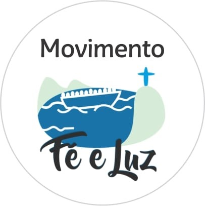
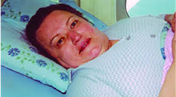
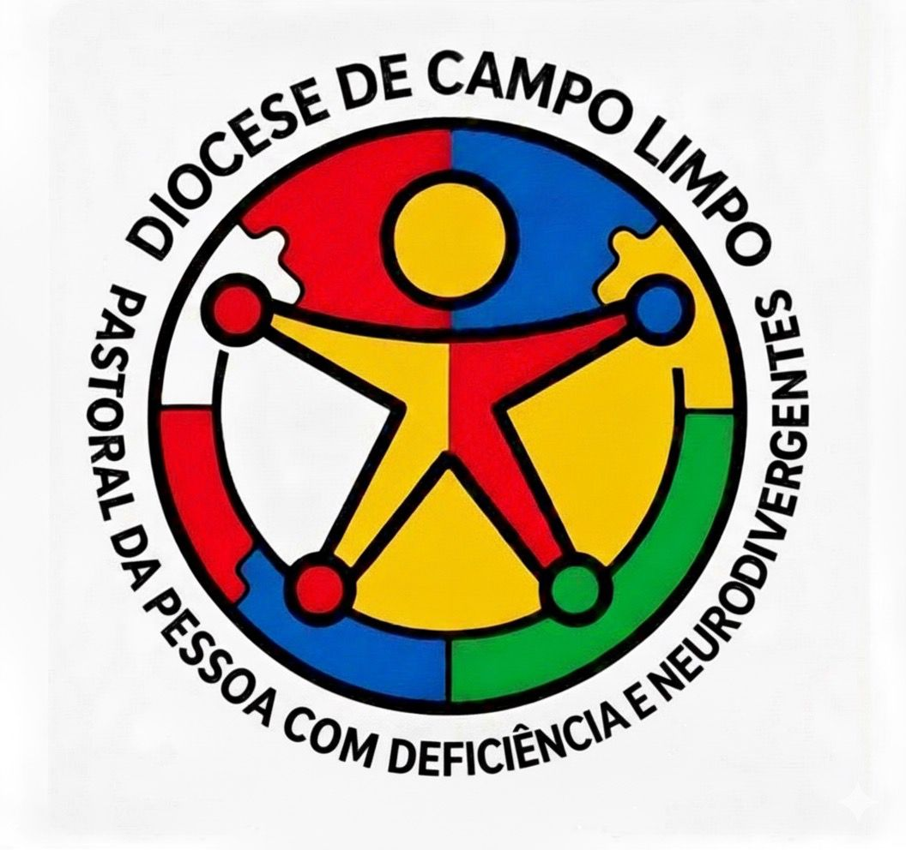

A Pastoral da Pessoa com Deficiência e Neurodivergentes é um serviço de amor, acolhimento e evangelização.
Nosso compromissoé promover a inclusão, a valorização e o protagonismo das pessoas com deficiência na vida da IGREJA e da SOCIEDADE reconhecendo-as como sujeitos de direitos, fé e missão.

Dando Voz: Reuni a sociedade, assistência social, saúde, educação, política em temas para promoção da inclusão Comunidade São Sebastião

Acolhimento Familiar: Oferece apoio psicológico e
emocional para os familiares de pessoas com deficiência
Fraternidade Cristã de Pessoas com Deficiência - Jd Angela. Fraternidade Cristã de Pessoas com Deficiência - Jardim Mitsutani
Centro de pessoas com deficiência e seus familiares
Sociedade Santos Mártires

AUFA-DIVERSO Grupo de Apoio a Familiares, Cuidadores e Amigos de Pessoas Neurodivergentes
Sociedade Santos Mártires
Acolhida e Empatia
Fé e Espiritualidade Inclusiva
Protagonismo da Pessoa com Deficiência

Maria de Lourdes Guarda nasceu em Salto, interior de São Paulo em 22 de novembro de 1926. Tinha sérios problemas na coluna e veio para São Paulo fazer cirurgia, onde infelizmente acabou se tornando uma pessoa com deficiência. Independente da sua condição e pela sua imensa fé em Deus, Lourdes se dedicou e doou integralmente a ajudar as pessoas e desta forma, criou a Fraternidade Cristã de Pessoas com Deficiência no Estado de São Paulo. Lourdes foi reconhecida pela Igreja Católica primeiramente como Serva de Deus e hoje ela já tem o título de Venerável. e está a caminho da Canonizacão.
Sua participação é fundamental para construirmos uma Igreja mais inclusiva.
pastoralpcd@forumdeinclusao.org.br
(11) 96984-7525
Coordenador da Pastoral
Pe. Eduardo Mcgettrick
